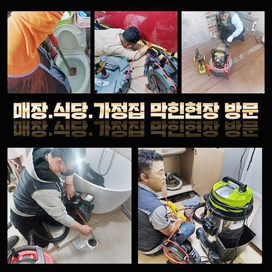
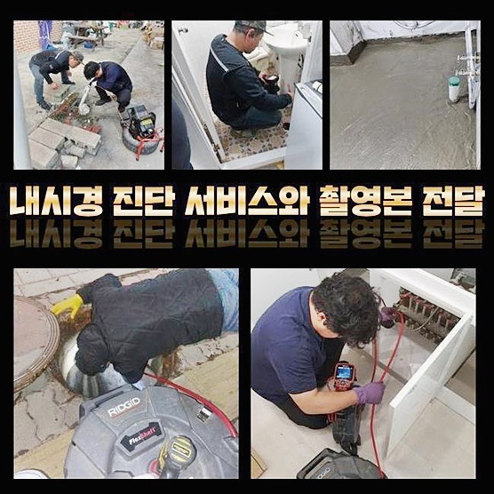
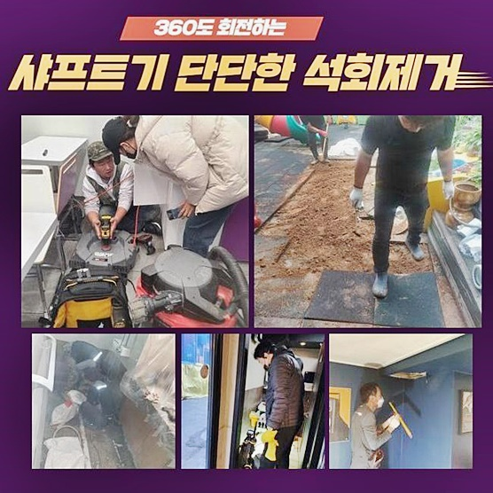
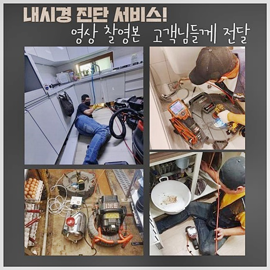
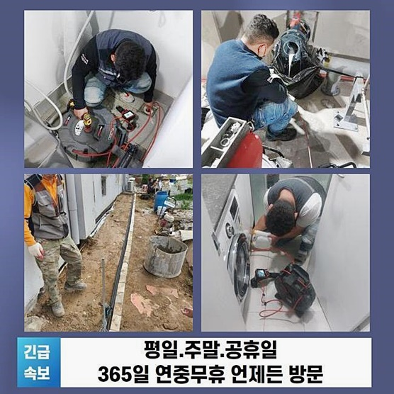
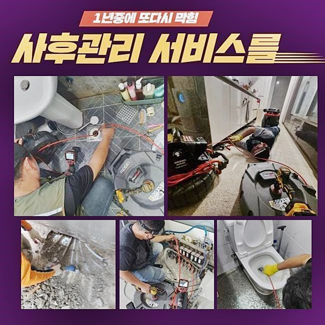
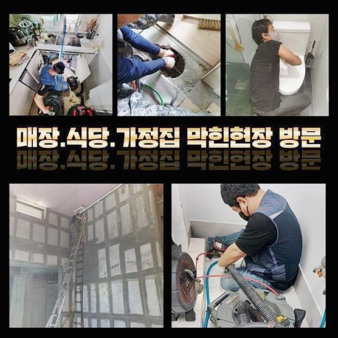

🏠 마포 노고산동하수구뚫음 합정동 횡주관청소 누수탐지공사
용인 하수구막힘 전문 시공 후기

📋 작업 개요
- 위치: 용인
- 서비스 유형: 하수구막힘, 배관막힘, 누수수리, 역류해결, 뚫는업체, 배관청소, 고압세척, 설비공사, 악취차단
- 작업 일시: 2024. 9. 29. 11:03
- 업체명: 하수구수사대 (010-5615-2118)
🔍 문제 상황
마포 노고산동하수구뚫음 합정동 횡주관청소 누수탐지공사
여러 세대가 동시에 옹기종기 모여있다면 대수롭지않은 사건만으로도 물이 차단되고 막혀버리죠
얼마 전 처리했던 작업장의 형태는 역시 다세대 건물이었습니다 빌라의 1층에서 하수구가 차단돼서 경비실에 다급히 연락을 하셨던 사태를 맞이하셨습니다
하수의 이동경로가 막히고 역류 증세가 나타난다면 제일 밑 세대에서 비교적 먼저 일어납니다
하수구가 여러 차례 망가지는 이유를 추론해 보자면 배수관이 탑재하고 있는 모양으로 인한 것입니다
생활하수를 폐기하는 절차들이 순탄하게 전달되도록 하려면 모든 가정으로 가는 수로와 주 배관이 일정한 파이프로 이어집니다
기다랗게 이어진 배관들은 모두 연계되어 있으므로 이물질이 어떤 깊이에서 껴서 차단이 되어버리거나 오류가 나타나게 된다면 단지 한 세대 안에서만 고장이 보이는 것이 아니라 여러 거주지 안에서 저마다의 증상이 나타나는 큰 문제가 되어버리기도 해요
오염수의 역행 등등 정상 경로의 일부가 차단된 배관으로 인해 건물의 가장 하단부에서 여러가지 손해들을 다뤄야하는 상황에 놓인 것이죠!
하수구의 이상을 감지하신 관리인분이 파이프가 중단된 사태라고 얼른 와달라 접수를 넣어주셨습니다
물의 흐름이 순조롭게 수행되지 않았기 때문에 건물의 모든 거주자에게 난감함이 전달되고 있는 현재 상태로 보였습니다
방문 전 상담 중에 습득한 내용을 분석해서 대략적으로 짐작을 해보았고 필요한 기기들을 구비하여 조속히 작업지로 향했네요

🔎 원인 분석
💡 전문가 진단: 정밀 진단 장비를 사용하여 슬러지의 고착 여부를 판명하고 타격/세척 작업을 실시했습니다.
하수구가 막혀버리는 것은 새벽대라고 하더라도 장소도 가리지 않고 나타날 수 있는 사고입니다
그렇기에 평상시에 하수설비에 대한 문제에 촉각을 곤두세워서 비정상적인 징후가 보일 때 얼른 수습할 수 있는 정보력을 갖추는 노력이 들어가야 합니다
다수의 상황들을 극복해 오면서 비상사태거나 고난이도 현장이라도 민첩하게 현황을 판단해서 해소를 해드리고 있으니 마음 편히 빠르게 전화해주시기만 하면 됩니다
주소지에 도착하면 첫 과정으로 문제의 본질이 무엇인지 심혈을 기울여 파악합니다
언제부터 빚어진 일인지는 알지만 전문적인 눈으로 봤을 때 문제를 야기하는 지점들은 색다른 의견이 나올 수 있으니 초반에 진단을 하고 들어갑니다
일단 압력을 가하고 보는 것보다 무엇이 오류를 만들었나 알아야만 업무에 대한 완결도가 동반 상승할 것이니까요!
역류된 물로 엉망이 된 장소의 곳곳을 보며 단번에 여러가지 하수적 문제를 탈피할 수 있는 해결책을 물색해 봐요
장비를 통해서 메인관로를 점검하며 오류를 만든 실마리를 찾아가 보았습니다!
정말 다량의 하수의 잔량이 걸림 없이 내려가지 못하게 한 대상물은 많은 종류의 이물질들이 합체한 덩어리가 통로를 가득 장애물처럼 막고 있었죠
정상적으로 물이 배출되지 않는데 물을 조금만 힘줘서 돌려도 압력으로 역류를 하면서 두꺼운 중앙 배관과 제일 가까운 지점에 있는 가장 밑에 위치한 세대에서 물이 바깥으로 터져나오는 현상이 자꾸만 생겼던 겁니다
하수구 설비를 담당해 오며 여러 현장들에서 여러 막힘들을 극복했던 게 많이 누적되었으니 스킬을 동원해서 현재 상황을 야기한 요인과 그에 걸맞는 해결법을 간파할 수 있습니다
하수구를 거쳐서 물을 배출하면서 도중에 여러가지 더러운 불순물이 섞이는데요!

🔧 작업 과정
이것들이 계속 누적되면서 결국엔 막힘까지 초래하게 됐다고 추정해 볼 수 있었네요
막힌 통로를 뚫어내는 작업으로 기본적인 씨앗을 소거시키는 것이 중대한 과제였습니다
뭐 때문에 빚어진 일인지 정확히 인식해내는 부분이 최우선적인 과제이므로 배관을 관측하는 카메라를 주입해서 내부를 샅샅이 들여다보는 일을 이어가며 사태를 봐줬어요
내시경이라는 단어를 들으면 병원의 관측 장비 쯤으로 받아들이시지만 깊고 어두운 파이프에 딱 맞게 개발된 기계입니다
파이프는 매우 길이가 길어서 눈으로 들여다 보는 방법으로는 심층부의 상황까지는 인식하지 못하는 제한된 성격을 지니고 있으므로 내부를 비춰줄 수 있는 도구의 힘을 빌려야 합니다
이런 듬직한 기구의 유용성은 약화됐을지 모를 하수구의 망가뜨리지 않는 선에서 원활하게 막힌 사태를 풀어갈 수 있게 돕기 때문이죠
꼼꼼하지 않은 태도나 기계의 작동은 오히려 엄청난 공격으로 작용되어 결국에는 하수구 교환이라는 공사로 출혈을 만들게 됩니다
오염원을 구성하는 물질들과 사이즈나 특성들을 모두 관측과정에서 수렴했다면 작업 로드를 꾸리는데 커다란 자원이 될 수 있어요
전문업체를 알아보신다면 다수의 프로젝트 경험을 지니는 동시에 작업의 과정을 기술해둔 포트폴리오를 차근차근 비교해 보시고 최종적으로 결정하시면 좋겠네요
여러 현장에서 배관들이 일정하게 장착되어 있지 않으며 장소마다 다르고 까다롭기도 합니다
그렇기 때문에 내부 탐사 과정을 할 시에는 구간별로 점검해주고 유독 한 지점에 에러가 생긴게 확실하다 해도 가볍게 중단하는 게 아니라 접합되어 있는 작은 배관까지도 쭉 스캔하여 면밀히 따져봅니다
이슈가 발생한 곳을 발견했다면 이 안으로 무슨 기기를 써서 깔끔하게 세척해 줄 것인지 계획을 세워야 하겠죠
방해 요소를 걷어올리려는 목적으로 투입되는 기계는 종류가 많지만 적절한 방책을 결정해야만 안에 고인 답답한 상태를 뚫고서 정상화 시킬 수 있어요
철저한 조사를 통해 얻어낸 제일 악화된 지점을 골라서 뚫음 업무를 하기 위해 배관 고압세척 통로를 개방해 주었습니다
침전물이 안개처럼 뿌옇게 낀 파트가 간혹 보인다면 회전력이 좋은 플렉스 샤프트로 유연화를 시켜줍니다
샤프트는 벽면을 따라서 상당한 사이즈로 불어난 딱딱한 덩어리를 자잘하게 썰어주고 갈고리로 말아 올려주는 등 다양한 용도로 활용됩니다
이렇게 이물을 제거한 후 센 물살을 활용해서 배관 내부의 환경을 깨끗이 청소를 해주는데요
이물을 남김없이 탈락시켜야 추후 하수관에 또 다른 슬러지가 다시 탄생하지 않을 조건이 되는 겁니다


✅ 작업 완료
습식청소기인 석션기를 통해서 믹서기처럼 갈려버린 조각들을 빠짐 없이 밖으로 외부로 유출시켰습니다
대충해서 잔해가 남아버려서 막힘의 재발이라도 생기는 것은 용인될 수 없는 불찰이기에 끝까지 내시경을 같이 주입해서 남아있는 분량이 없게 주의깊게 검토했죠
메인관로는 작은 배관들의 노폐물이 집합하는 곳이니 정기적으로 점검해야 합니다
내부 진단을 주기적으로 해주고 내부 정화 작업을 해준다면 하수관을 막힘 이슈 없이 편안하게 쓸 수 있답니다
하수관이 소통되지 못해서 골머리를 앓고 계신다면 책임지고 고쳐드릴 준비가 되어있으니 상담을 요청해 주세요




⚠️ 베란다 누수 및 방수 관리 방법
- ✅ 비가 많이 올 때 창틀 주변이나 아래층 천장에 얼룩이 생기는지 정기적으로 확인해 보세요.
- ✅ 우수관 주변 실리콘 마감이 들뜨거나 깨진 틈새가 있는지 손상 여부를 수시로 체크하세요.
- ✅ 베란다 바닥 타일의 줄눈(메지)이 소실되면 그 틈으로 물이 침투하여 누수가 유발됩니다.
- ✅ 누수 의심 증상 발견 시 방치하면 아래층 손실이 커지므로 즉시 전문가의 진단을 받으십시오.
💡 핵심 정리
- 확실한 장비 작업(내시경 점검 및 샤프트 스케일링)으로 원인을 뿌리 뽑습니다.
- 작업 후 1년 이내에 동일한 부위 재발 시 100% 무상 A/S 서비스를 보장합니다.
- 서울 · 경기 · 인천 전 지역에 24시간 언제든 긴급 출동할 수 있도록 항시 대기 중입니다.
❓ 자주 묻는 질문 (FAQ)
🚨 용인 하수구막힘 문제로 고민이신가요?
정확한 원인 진단과 확실한 시공으로 재발 없는 해결을 약속드립니다.
24시간 긴급 출동 | 서울 · 경기 · 인천 전지역 | 1년 내 재발 시 무상 A/S